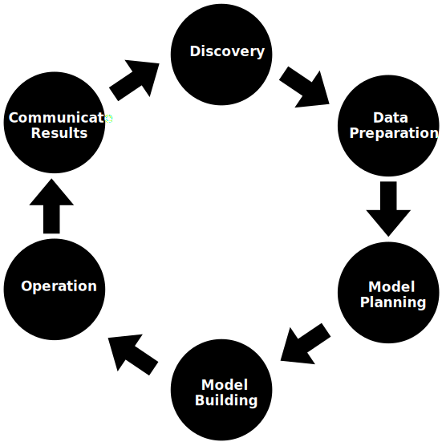

Introduction to Data Science
What is Data Science?
Data science is a field that involves using scientific methods, processes, algorithms, and systems to
extract knowledge and insights from structured and unstructured data. It combines expertise from various
domains such as statistics, mathematics, computer science, and domain knowledge to analyze complex data
sets and solve real-world problems.
Significant Advantages of using Data Analytics Technology:
- Improved Decision Making: Data analytics helps businesses make better decisions by providing
insights based on data analysis.
- Enhanced Efficiency: By automating data processing and analysis, organizations can streamline
operations and save time.
- Cost Savings: Data analytics can identify cost-saving opportunities and optimize resource
allocation.
- Competitive Advantage: Utilizing data analytics gives companies a competitive edge by enabling
them
to adapt quickly to market trends and customer preferences.
- Enhanced Customer Experience: Personalized recommendations and targeted marketing campaigns
based on
data analysis can improve customer satisfaction.
Relationships and Intersections in Artificial Intelligence, Machine Learning, Deep Learning,
Mathematics, Statistics, and Data Science
- Artificial Intelligence (AI):
- AI encompasses the broader field of creating intelligent systems that can simulate
human-like intelligence and behavior.
- Relationship with Machine Learning (ML): ML is a subset of AI, focusing on algorithms
and
techniques that enable systems to learn from data and improve their performance over
time.
- Relationship with Deep Learning (DL): DL is a subset of ML, specifically focusing on
neural
networks and hierarchical feature learning inspired by the human brain.
- Machine Learning (ML):
- ML involves the development of algorithms and models that enable computers to learn from
data without being explicitly programmed.
- Relationship with AI: ML is a key component of AI, as AI systems often use ML techniques
to
learn from data and make decisions.
- Relationship with Deep Learning (DL): DL is a specialized area within ML that focuses on
deep neural networks and hierarchical feature learning.
- Deep Learning (DL):
- DL is a subset of ML that focuses on artificial neural networks and deep architectures
to
model complex patterns and learn representations from data.
- Relationship with AI and ML: DL is a specialized technique within ML, used in various AI
applications for tasks such as image recognition, natural language processing, and
speech
recognition.
- Data Science (DS):
- DS involves the use of scientific methods, algorithms, and systems to extract insights
and
knowledge from data.
- Relationship with ML, DL, and AI: DS incorporates ML, DL, and AI techniques to analyze
and
interpret data, extract meaningful patterns, and make data-driven decisions.
- Relationship with Mathematics and Statistics: DS heavily relies on mathematical and
statistical principles for data analysis, modeling, and inference.
- Mathematics and Statistics:
- Mathematics provides the theoretical foundation for algorithms, optimization, and
modeling
in AI, ML, DL, and DS.
- Statistics provides methods for data analysis, inference, hypothesis testing, and
predictive
modeling.
- Relationship with DS: Mathematics and Statistics are fundamental to DS, providing the
analytical tools and techniques needed for data analysis and interpretation.
In summary, the Venn diagram illustrates the relationships between key components in the field of
data science and artificial intelligence (AI). Artificial intelligence (AI) serves as the
overarching concept, encompassing machine learning (ML) and deep learning (DL). ML involves
algorithms that enable systems to learn from data, while DL focuses on deep neural networks for
complex pattern recognition. Data science (DS) integrates ML, DL, and AI techniques to extract
insights from data, relying on mathematical and statistical principles. Mathematics and statistics
provide the foundation for algorithms, optimization, and data analysis in these areas. Together,
these components form a interconnected ecosystem driving advancements in technology and data-driven
decision making.
Data Science Components
- Machine Learning (ML): ML algorithms enable systems to learn from data, make predictions, and
identify patterns without being explicitly programmed.
- Deep Learning (DL): DL is a subset of ML that focuses on neural networks and hierarchical
feature learning, used for tasks like image recognition and natural language processing.
- Big Data Technologies: Big data tools and technologies such as Hadoop, Spark, and NoSQL
databases are used to handle and analyze large volumes of data.
- Data Visualization: Data visualization tools and techniques help in representing data visually,
making it easier to understand and interpret insights.
- Data Preprocessing: Data preprocessing involves cleaning, transforming, and preparing data for
analysis, ensuring data quality and reliability.
- Statistical Analysis: Statistical methods and techniques are applied to analyze data, derive
insights, and make data-driven decisions.
- Business Intelligence (BI): BI tools and dashboards provide interactive visualizations and
reports for business users to monitor and analyze key metrics and KPIs.
- Predictive Analytics: Predictive models and algorithms are used to forecast future trends,
outcomes, and behaviors based on historical data.
- Natural Language Processing (NLP): NLP techniques process and analyze human language data,
enabling applications such as sentiment analysis and chatbots.
- Cloud Computing: Cloud platforms and services facilitate data storage, processing, and analysis,
offering scalability and flexibility for data science projects.
Data Analytics Life Cycle

- Discovery: Acquire data from various sources such as web servers, social media,
census datasets, and online APIs to answer business questions.
- Preparation: Cleanse data by addressing inconsistencies like missing values,
blank columns, and incorrect formats to improve predictions.
- Model Planning: Plan methods and techniques to establish relationships between
input variables using statistical formulas and visualization tools like SQL analysis services,
R, and SAS/access.
- Model Building: Split datasets for training and testing, apply techniques like
association, classification, and clustering to the training set, and test the model against a
separate "testing" dataset.
- Operationalize: Deliver the finalized model with reports, code, and technical
documents, deploy it into a real-time production environment after thorough testing.
- Communicate Results: Share key findings with stakeholders to assess project
success or failure based on the model's outputs.
Example:
Imagine a retail company that wants to improve its sales forecasting using data analytics. They
follow the Data Analytics Life Cycle as follows:
- Discovery:
The company acquires sales data from its stores, including transaction history, customer
demographics, and product details. They also gather external data like economic indicators and
weather forecasts to understand factors influencing sales.
- Preparation:
The data is cleaned to remove inconsistencies and errors. Missing sales records are filled in
using historical trends, and data formats are standardized for analysis. Additionally, they
segment customers based on purchasing behavior and demographics.
- Model Planning:
Statistical analysis is used to identify correlations between sales and various factors such as
promotions, seasonality, customer segments, and external factors like holidays or events.
Visualization tools help visualize trends and patterns in the data.
- Model Building:
Machine learning algorithms, such as time series forecasting models or regression models, are
applied to predict future sales based on historical data and identified variables. The model is
trained and tested using a portion of the data.
- Operationalize:
The finalized sales forecasting model is integrated into the company's systems. Reports and
dashboards are created to monitor sales predictions in real-time. The model is regularly updated
with new data to improve accuracy.
- Communicate Results:
Key findings from the sales forecasting model, including predicted sales trends and insights,
are communicated to stakeholders such as sales teams, marketing departments, and executives.
This information guides decision-making, inventory planning, and marketing strategies.
Data Science Job Roles
-
Data Scientist: Data scientists analyze complex data sets to extract meaningful
insights and patterns. They develop machine learning models, algorithms, and predictive
analytics to
solve business problems and make data-driven decisions.
- Data scientists use programming languages like Python,
R, and SQL for data analysis, machine learning, and statistical modeling.
-
Data Engineer: Data engineers design and build data pipelines, databases, and
data
infrastructure to support data analysis and machine learning projects. They ensure data quality,
reliability, and scalability.
- Data engineers work with languages like Python, Java,
Scala, and SQL to build data pipelines, ETL processes, and data infrastructure.
-
Data Analyst: Data analysts interpret data, create reports, and visualize data
trends to support business decision-making. They use statistical analysis and data visualization
tools to identify patterns and trends in data.
- Data analysts use tools like SQL, Python, R, and Excel
for data querying, analysis, visualization, and reporting.
-
Statistician: Statisticians design experiments, analyze data, and develop
statistical models to derive insights and make predictions. They apply statistical techniques to
solve problems in various domains such as healthcare, finance, and marketing.
- Statisticians utilize statistical software like R,
Python, SAS, and SPSS for data analysis, hypothesis testing, and statistical modeling.
-
Data Architect: Data architects design and manage data systems, databases, and
data
warehouses. They develop data models, schemas, and architecture to ensure data integrity,
security,
and accessibility.
- Data architects work with languages such as SQL,
Python, Java, and Scala for database design, data modeling, and data system development.
-
Data Admin: Data administrators oversee the maintenance, security, and backup
of
databases and data systems. They manage user access, troubleshoot data issues, and ensure data
governance and compliance.
- Data administrators use languages like SQL, Python, and
shell scripting for database management, maintenance, and security tasks.
-
Business Analyst: Business analysts bridge the gap between technical data
analysis
and business objectives. They gather and analyze business requirements, translate data insights
into
actionable strategies, and collaborate with stakeholders to drive business decisions.
- Business analysts work with tools like Excel, SQL,
and visualization software for data analysis, reporting, and business intelligence.
-
Data/Analytics Manager: Data or analytics managers lead teams of data
scientists,
analysts, engineers, and administrators. They oversee data projects, set data strategy, manage
resources, and ensure the effective use of data for business outcomes.
- Data or analytics managers may use a
combination of languages like SQL, Python, R, and business intelligence tools for
strategic planning, team management, and data-driven decision-making.
-
Machine Learning Engineer: Machine learning engineers design, implement, and
deploy
machine learning models and systems. They collaborate with data scientists and engineers to
integrate machine learning solutions into production environments.
- Machine learning engineers use languages
like Python, Java, Scala, and R for developing machine learning models, algorithms, and
systems.
-
AI Research Scientist: AI research scientists conduct research and development
in
artificial intelligence technologies. They work on advanced AI algorithms, neural networks,
natural
language processing, computer vision, and other AI-related projects.
- AI research scientists work with languages like
Python, Java, C++, and R for AI algorithm development, neural networks, and deep
learning.
-
Data Visualization Specialist: Data visualization specialists create visually
appealing and interactive data visualizations, dashboards, and reports using tools like Tableau,
Power BI, and D3.js.
- Data visualization specialists use tools
like Tableau, Power BI, D3.js, and programming languages like Python and JavaScript for
creating interactive data visualizations and dashboards.
-
Data Governance Analyst: Data governance analysts ensure data is managed,
protected, and compliant with regulations. They develop data governance policies, establish data
quality standards, and monitor data usage and access.
- Data governance analysts work with languages
such as SQL, Python, and scripting languages for data governance, compliance, and data
quality tasks.
-
Data Science Consultant: Data science consultants provide strategic guidance on
data science projects, develop customized solutions, and optimize data-driven strategies for
businesses.
- Data science consultants may use a wide range
of languages and tools based on project requirements, including Python, R, SQL, Java,
and business intelligence software.
-
Data Ethics Officer: Data ethics officers ensure ethical use of data within
organizations. They develop policies for responsible data handling, privacy protection, and
ethical
AI deployment.
- Data ethics officers work with languages like
Python, SQL, and scripting languages to develop ethical data policies, privacy
protections, and compliance frameworks.
-
Data Science Educator/Trainer: Data science educators or trainers teach and
train
individuals or teams in data science concepts, tools, and techniques through workshops, courses,
and
online training programs.
- Data science educators/trainers use
languages like Python, R, SQL, and teaching platforms for delivering data science
training and education.
Applications of Data Science
-
Internet Search: Google search uses Data science technology to search for a
specific result within a fraction of a second.
-
Recommendation Systems: Data Science is used to create recommendation systems
like “suggested friends” on Facebook or “suggested videos” on YouTube.
-
Image & Speech Recognition: Speech recognition systems like Siri, Google
Assistant, and Alexa, as well as image recognition on platforms like Facebook, are powered by
Data Science.
-
Gaming world: Gaming companies like EA Sports, Sony, and Nintendo use Data
Science to enhance gaming experiences, develop games using Machine Learning techniques, and
update games dynamically based on player interactions.
-
Online Price Comparison: Platforms like PriceRunner, Junglee, and Shopzilla
utilize Data Science to fetch data from relevant websites using APIs for online price
comparison.
-
Healthcare Analytics: Data Science is used in healthcare for analyzing medical
records, predicting patient outcomes, personalized medicine, and optimizing healthcare
operations.
-
Fraud Detection: Banks and financial institutions use Data Science to detect
fraudulent activities, identify suspicious transactions, and improve security measures.
-
Social Media Analytics: Social media platforms leverage Data Science for
sentiment analysis, user behavior analysis, targeted advertising, and content recommendation.
-
Supply Chain Optimization: Data Science is applied in supply chain management
for demand forecasting, inventory optimization, logistics planning, and supplier relationship
management.
-
Energy Management: Energy companies use Data Science for energy consumption
analysis, renewable energy optimization, predictive maintenance of equipment, and grid
management.
Challenges of Data Science Technology
-
A high variety of information & data is required for accurate analysis: Data
Science requires diverse and comprehensive data sets for meaningful insights, which can be
challenging to gather and analyze.
-
Not adequate data science talent pool available: There is a shortage of skilled
data scientists and professionals with expertise in data analysis, machine learning, and
statistical modeling.
-
Management does not provide financial support for a data science team: Lack of
investment and resources from management can hinder the development and implementation of data
science projects and initiatives.
-
Unavailability of/difficult access to data: Data accessibility issues,
including data silos, limited data sources, and data privacy concerns, can impede data science
efforts.
-
Business decision-makers do not effectively use Data Science results:
Data-driven decision-making requires understanding and trust in data science outcomes, which may
be lacking among business leaders.
-
Explaining data science to others is difficult: Communicating complex data
science concepts and insights to non-technical stakeholders can be challenging, leading to
misunderstandings and misinterpretations.
-
Privacy issues: Data privacy regulations and concerns, such as GDPR and data
security breaches, can impact data collection, storage, and analysis practices in Data Science
projects.
-
Lack of significant domain expert: Domain knowledge is crucial for interpreting
data in context and deriving actionable insights, and the absence of domain experts can limit
the effectiveness of data science solutions.
-
If an organization is very small, it cannot have a Data Science team: Limited
resources and capabilities in small organizations may prevent them from establishing dedicated
data science teams or investing in data science technologies.